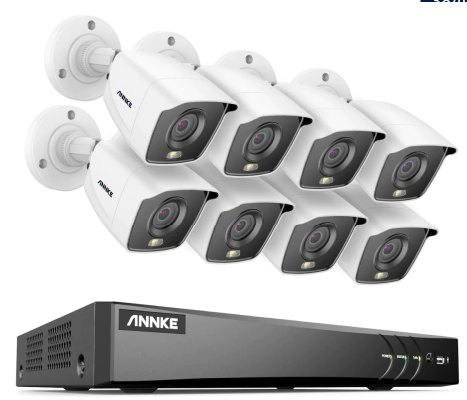

U firemních objektů se často používají statické kamery namířené na konkrétní místo: vstup, pokladnu, sklad, parkoviště nebo provozní prostor. Kamery mohou být připojené kabelem do rekordéru s diskem a zároveň dostupné v mobilní aplikaci.

Stačí poslat několik fotek míst, která chcete hlídat. Navrhnu vhodný typ kamer, počet a způsob připojení.